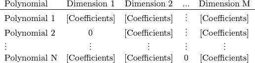

pygpc package¶
A package that provides submodules in order to perform polynomial chaos uncertainty analysis on complex dynamic systems.
-
pygpc.iprint(message, verbose=True, tab=None)[source]¶ Function that prints out a message over the python logging module
iprint(message, verbose=True)
Parameters: - message (string) – string to print in standard output
- verbose (bool, optional, default=True) – determines if string is printed out
-
pygpc.wprint(message, verbose=True, tab=None)[source]¶ Function that prints out a warning message over the python logging module
wprint(message, verbose=True)
Parameters: - message (string) – string to print in standard output
- verbose (bool, optional, default=True) – determines if string is printed out
Submodules¶
pygpc.gpc module¶
Class that provides general polynomial chaos methods
-
class
pygpc.gpc.gPC[source]¶ General gPC base class
-
N_grid¶ number of grid points
Type: int
-
N_poly¶ number of polynomials psi
Type: int
-
N_samples¶ number of samples xi
Type: int
-
N_out¶ number of output coefficients
Type: int
-
dim¶ number of uncertain parameters to process
Type: int
-
pdf_type¶ type of pdf ‘beta’ or ‘norm’
Type: [dim] list of str
-
pdf_shape¶ shape parameters of pdfs beta-dist: [[alpha], [beta] ] normal-dist: [[mean], [variance]]
Type: list of list of float
-
limits¶ upper and lower bounds of random variables beta-dist: [[a1 …], [b1 …]] normal-dist: [[0 … ], [0 … ]] (not used)
Type: list of list of float
-
order¶ maximum individual expansion order generates individual polynomials also if maximum expansion order in order_max is exceeded
Type: [dim] list of int
-
order_max¶ maximum expansion order (sum of all exponents) the maximum expansion order considers the sum of the orders of combined polynomials only
Type: int
-
interaction_order¶ number of random variables, which can interact with each other all polynomials are ignored, which have an interaction order greater than the specified
Type: int
-
grid¶ grid object generated in grid.py including grid.coords and grid.coords_norm
Type: grid object
-
random_vars¶ string labels of the random variables
Type: [dim] list of str
-
sobol¶ Sobol indices of N_out output quantities
Type: [N_sobol x N_out] np.ndarray
-
sobol_idx¶ List of parameter label indices belonging to Sobol indices
Type: [N_sobol] list of np.ndarray
-
cpu¶ flag to execute the calculation on the cpu
Type: bool
-
gpu¶ flag to execute the calculation on the gpu
Type: bool
-
verbose¶ boolean value to determine if to print out the progress into the standard output
Type: bool
-
gpc_matrix¶ generalized polynomial chaos matrix
Type: [N_samples x N_poly] np.ndarray
-
gpc_matrix_inv¶ pseudo inverse of the generalized polynomial chaos matrix
Type: [N_poly x N_samples] np.ndarray
-
gpc_coeffs¶ coefficient matrix of independent regions of interest for every coefficient
Type: [N_poly x N_out] np.ndarray
-
poly¶ polynomial objects containing the coefficients that are used to build the gpc matrix
Type: [dim x order_span] list of list of np.poly1d:
-
poly_gpu¶ polynomial coefficients stored in a np.ndarray that can be processed on a graphic card
Type: np.ndarray
-
poly_idx¶ multi indices to determine the degree of the used sub-polynomials
Type: [N_poly x dim] np.ndarray
-
poly_idx_gpu [N_poly x dim] np.ndarray multi indices to determine the degree of the used sub-polynomials stored in a np.ndarray that can be processed on a graphic card
-
poly_der¶ derivative of the polynomial objects containing the coefficients that are used to build the gpc matrix
Type: [dim x order_span] list of list of np.poly1d:
-
poly_norm¶ normalizing scaling factors of the used sub-polynomials
Type: [order_span x dim] np.ndarray
-
poly_norm_basis¶ normalizing scaling factors of the polynomial basis functions
Type: [N_poly] np.ndarray
-
sobol_idx_bool¶ boolean mask that determines which multi indices are unique
Type: list of np.ndarray of bool
-
extend_gpc_matrix_samples(samples_poly_ratio, seed=None)[source]¶ Add sample points according to input pdfs to grid and extend the gpc matrix such that the ratio of rows/columns equals samples_poly_ratio.
extend_gpc_matrix_samples(samples_poly_ratio, seed=None):
Parameters: - samples_poly_ratio (float) – ratio between number of samples and number of polynomials the matrix will be extended until
- seed (float, optional, default=None) – random seeding point
-
extend_polynomial_basis(poly_idx_added)[source]¶ Extend polynomial basis functions and add new columns to gpc matrix.
extend_polynomial_basis(poly_idx_added)
Parameters: poly_idx_added ([N_poly_added x dim] np.ndarray) – array of added polynomials (order)
-
get_global_sens(coeffs)[source]¶ Determine the global derivative based sensitivity coefficients.
Reference: D. Xiu, Fast Numerical Methods for Stochastic Computations: A Review, Commun. Comput. Phys., 5 (2009), pp. 242-272 eq. (3.14) page 255
get_global_sens = calc_globalsens(coeffs)
Parameters: coeffs ([N_coeffs x N_out] np.ndarray) – gpc coefficients Returns: get_global_sens – global derivative based sensitivity coefficients Return type: [dim x N_out] np.ndarray
-
get_local_sens(coeffs, xi)[source]¶ Determine the local derivative based sensitivity coefficients in the point of operation xi in normalized coordinates.
get_local_sens = calc_localsens(coeffs, xi)
Parameters: - coeffs ([N_coeffs x N_out] np.ndarray) – gpc coefficients
- xi ([N_coeffs x N_out] np.ndarray) – point in variable space to evaluate local sensitivity in (normalized coordinates!)
Returns: get_local_sens – local sensitivity
Return type: [dim x N_out] np.ndarray
-
get_mean_random_vars()[source]¶ Determine the average values of the input random variables from their pdfs.
Returns: mean_random_vars – average values of the input random variables Return type: [N_random_vars] np.ndarray
-
static
get_mean_value(coeffs)[source]¶ Calculate the expected mean value.
mean = get_mean_value(coeffs)
Parameters: coeffs ([N_coeffs x N_out] np.ndarray) – gpc coefficients Returns: mean – expected mean value Return type: [1 x N_out] np.ndarray
-
get_pce(coeffs=None, xi=None, output_idx=None)[source]¶ Calculates the gPC approximation in points with output_idx and normalized parameters xi (interval: [-1, 1]).
pce = get_pce(coeffs=None, xi=None, output_idx=None)
Parameters: - coeffs ([N_coeffs x N_out] np.ndarray, optional, default=None) – gpc coefficients
- xi ([1 x dim] np.ndarray, optional, default=None) – point in variable space to evaluate local sensitivity in normalized coordinates
- output_idx ([1 x N_out] np.ndarray, optional, default=None) – idx of output quantities to consider (Default: all outputs)
Returns: pce – gpc approximation at normalized coordinates xi
Return type: [N_xi x N_out] np.ndarray
Example
pce = get_pce([[xi_1_p1 … xi_dim_p1] ,[xi_1_p2 … xi_dim_p2]], np.array([[0,5,13]]))
-
get_pdf(coeffs, N_samples, output_idx=None)[source]¶ Determine the estimated pdfs of the output quantities
pdf_x, pdf_y = get_pdf(coeffs, N_samples, output_idx=None)
Parameters: - coeffs ([N_coeffs x N_out] np.ndarray) – gpc coefficients
- N_samples (int) – number of samples used to estimate output pdf
- output_idx ([1 x N_out] np.ndarray, optional, default=None) – idx of output quantities to consider if output_idx=None, all output quantities are considered
Returns: - pdf_x ([100 x N_out] np.ndarray) – x-coordinates of output pdf (output quantity),
- pdf_y ([100 x N_out] np.ndarray) – y-coordinates of output pdf (probability density of output quantity)
-
get_pdf_monte_carlo(N_samples, coeffs=None, output_idx=None)[source]¶ Randomly sample the gPC expansion to determine output pdfs in specific points.
xi = get_pdf_mc(N_samples, coeffs=None, output_idx=None)
Parameters: - N_samples (int) – number of random samples drawn from the respective input pdfs
- output_idx ([1 x N_out] np.ndarray, optional, default=None) – idx of output quantities to consider
- coeffs ([N_coeffs x N_out] np.ndarray, optional, default=None) – gPC coefficients
Returns: xi – generated samples in normalized coordinates
Return type: [N_samples x dim] np.ndarray
-
get_sobol_indices(coeffs=None)[source]¶ Calculate the available sobol indices.
sobol, sobol_idx = get_sobol_indices(coeffs=None)
Parameters: coeffs ([N_coeffs x N_out] np.ndarray, optional, default=None) – gpc coefficients Returns: - sobol ([N_sobol x N_out] np.ndarray) – unnormalized sobol_indices
- sobol_idx (list of [N_sobol x dim] np.ndarray) – list containing the parameter combinations in rows of sobol
- sobol_idx_bool (list of np.ndarray of bool) – boolean mask that determines which multi indices are unique
-
get_sobol_order(sobol=None, sobol_idx=None, sobol_idx_bool=None)[source]¶ Evaluate order of determined sobol indices.
sobol, sobol_idx, sobol_rel_order_mean, sobol_rel_order_std, sobol_rel_1st_order_mean, sobol_rel_1st_order_std = get_sobol_order(coeffs=None, sobol=None, sobol_idx=None, sobol_idx_bool=None)
Parameters: - sobol ([N_sobol x N_out] np.ndarray) – unnormalized sobol_indices
- sobol_idx (list of [N_sobol x dim] np.ndarray) – list containing the parameter combinations in rows of sobol
- sobol_idx_bool (list of np.ndarray of bool) – boolean mask that determines which multi indices are unique
Returns: - sobol_rel_order_mean (np.ndarray) – average proportion of the Sobol indices of the different order to the total variance (1st, 2nd, etc..,) over all output quantities
- sobol_rel_order_std (np.ndarray) – standard deviation of the proportion of the Sobol indices of the different order to the total variance (1st, 2nd, etc..,) over all output quantities
- sobol_rel_1st_order_mean (np.ndarray) – average proportion of the random variables of the 1st order Sobol indices to the total variance over all output quantities
- sobol_rel_1st_order_std (np.ndarray) – standard deviation of the proportion of the random variables of the 1st order Sobol indices to the total variance over all output quantities
-
static
get_standard_deviation(coeffs)[source]¶ Calculate the standard deviation.
std = get_standard_deviation(coeffs)
Parameters: coeffs (np.array of float [N_coeffs x N_out]) – gpc coefficients Returns: std – standard deviation Return type: [1 x N_out] np.ndarray
-
init_gpc_matrix()[source]¶ Construct the gPC matrix and the Moore-Penrose-pseudo-inverse.
init_gpc_matrix()
-
init_polynomial_basis()[source]¶ Initialize polynomial basis functions for a maximum order expansion.
init_polynomial_basis()
-
init_polynomial_basis_gpu()[source]¶ Initialized polynomial basis coefficients for graphic card. Converts list of lists of self.polynomial_bases into np.ndarray that can be processed on a graphic card.
init_polynomial_basis_gpu()
-
init_polynomial_coeffs(order_begin, order_end)[source]¶ Calculate polynomial basis functions of a given order range and add it to the polynomial lookup tables. The size, including the polynomials that won’t be used, is [max_individual_order x dim].

init_polynomial_coeffs(poly_idx_added)
Parameters: - order_begin (int) – order of polynomials to begin with
- order_end (int) – order of polynomials to end with
-
init_polynomial_index()[source]¶ Initialize polynomial multi indices. Determine 2D multi-index array (order) of basis functions and generate multi-index list up to maximum order. The size is [No. of basis functions x dim].
![\begin{tabular}{l*{4}{c}}
Polynomial Index & Dimension 1 & Dimension 2 & ... & Dimension M \\
\hline
Basis 1 & [Order D1] & [Order D2] & \vdots & [Order M] \\
Basis 2 & [Order D1] & [Order D2] & \vdots & [Order M] \\
\vdots & [Order D1] & [Order D2] & \vdots & [Order M] \\
Basis N & [Order D1] & [Order D2] & \vdots & [Order M] \\
\end{tabular}](_images/math/2f4713d5f506bb40cd4a253571ec594b858a7375.png)
init_polynomial_index()
-
replace_gpc_matrix_samples(idx, seed=None)[source]¶ Replace distinct sample points from the gpc matrix.
replace_gpc_matrix_samples(idx, seed=None)
Parameters: - idx (np.ndarray) – array of grid indices of obj.grid.coords[idx,:] which are going to be replaced (rows of gPC matrix will be replaced by new ones)
- seed (float, optional, default=None) – random seeding point
-
write_log_sobol(fname, sobol_rel_order_mean, sobol_rel_1st_order_mean, sobol_extracted_idx_1st)[source]¶ Write sobol indices into logfile.
Parameters: - fname (str) – path to output file
- sobol_rel_order_mean (np.ndarray) – average proportion of the Sobol indices of the different order to the total variance (1st, 2nd, etc..,) over all output quantities
- sobol_rel_1st_order_mean (np.ndarray) – average proportion of the random variables of the 1st order Sobol indices to the total variance over all output quantities
- #TODO (add description) –
- sobol_extracted_idx_1st –
-
pygpc.grid module¶
Functions and classes that provide data and methods for the generation and processing of numerical grids
-
class
pygpc.grid.RandomGrid(pdf_type, grid_shape, limits, N, seed=None)[source]¶ Generate RandomGrid object instance.
RandomGrid(pdf_type, grid_shape, limits, N, seed=None)
-
pdf_type¶ variable specific type of pdf (“beta”, “normal”)
Type: [N_vars] list of str
-
grid_shape¶ shape parameters of PDF beta (jacobi): [alpha, beta] norm (hermite): [mean, std]
Type: [2 x N_vars] list of list of float
-
limits¶ Upper and lower bounds of PDF beta (jacobi): [min, max] norm (hermite): [0, 0] (unused)
Type: [2 x N_vars] list of list of float
-
N¶ number of random samples to generate
Type: int
-
seed¶ seeding point to replicate random grids
Type: float
-
dim¶ number of uncertain parameters to process
Type: int
-
coords¶ denormalized coordinates xi
Type: [N_samples x dim] np.ndarray
-
coords_norm¶ normalized [-1, 1] coordinates xi
Type: [N_samples x dim] np.ndarray
Parameters: - pdf_type ([N_vars] list of str) – variable specific type of pdf (“beta”, “normal”)
- grid_shape ([2 x N_vars] list of list of float) – shape parameters of PDF beta (jacobi): [alpha, beta] norm (hermite): [mean, std]
- limits ([2 x N_vars] list of list of float) – Upper and lower bounds of PDF beta (jacobi): [min, max] norm (hermite): [0, 0] (unused)
- N (int) – number of random samples to generate
- seed (float, optional, default=None) – seeding point to replicate random grids
-
-
class
pygpc.grid.SparseGrid(pdf_type, grid_type, grid_shape, limits, level, level_max, interaction_order, order_sequence_type, make_grid=True, verbose=True)[source]¶ Generate SparseGrid object instance.
- SparseGrid(pdf_type, grid_type, grid_shape, limits, level, level_max, interaction_order,
- order_sequence_type, make_grid=True, verbose=True)
-
pdf_type¶ variable specific type of PDF (“beta”, “normal”)
Type: [N_vars] list of str
-
grid_type¶ specify type of quadrature used to construct sparse grid (‘jacobi’, ‘hermite’, ‘cc’, ‘fejer2’)
Type: [N_vars] list of str
-
grid_shape¶ shape parameters of PDF beta (jacobi): [alpha, beta] norm (hermite): [mean, std]
Type: [2 x N_vars] list of list of float
-
limits¶ upper and lower bounds of PDF beta (jacobi): [min, max] norm (hermite): [0, 0] (unused)
Type: [2 x N_vars] list of list of float
-
level¶ number of levels in each dimension
Type: [N_vars] list of int
-
level_max¶ global combined level maximum
Type: int
-
interaction_order¶ interaction order of parameters and grid, i.e. the grid points are lying between this number of dimensions
Type: int
-
order_sequence_type¶ type of order sequence (‘lin’, ‘exp’) common: ‘exp’
Type: str
-
make_grid¶ boolean value to determine if to generate grid during initialization
Type: boolean
-
verbose¶ boolean value to determine if to print out the progress into the standard output
Type: bool
-
coords_norm¶ normalized [-1, 1] coordinates xi
Type: [N_samples x dim] np.ndarray
-
weights¶ weights of the grid
Type: np.ndarray
-
coords¶ denormalized coordinates xi
Type: [N_samples x dim] np.ndarray
-
level_sequence¶ list containing the levels
Type: list of int
-
order_sequence¶ list containing the polynomial order of the levels
Type: list of int
-
dim¶ number of uncertain parameters to process
Type: int
Parameters: - pdf_type ([N_vars] list of str) – variable specific type of PDF (“beta”, “normal”)
- grid_type ([N_vars] list of str) – specify type of quadrature used to construct sparse grid (‘jacobi’, ‘hermite’, ‘cc’, ‘fejer2’)
- grid_shape ([2 x N_vars] list of list of float) – shape parameters of PDF beta (jacobi): [alpha, beta] norm (hermite): [mean, std]
- limits ([2 x N_vars] list of list of float) – upper and lower bounds of PDF beta (jacobi): [min, max] norm (hermite): [0, 0] (unused)
- level ([N_vars] list of int) – number of levels in each dimension
- level_max (int) – global combined level maximum
- interaction_order (int) – interaction order of parameters and grid, i.e. the grid points are lying between this number of dimensions
- order_sequence_type (str) – type of order sequence (‘lin’, ‘exp’) common: ‘exp’
- make_grid (boolean, optional, default=True) – boolean value to determine if to generate grid during initialization
- verbose (bool, optional, default=True) – boolean value to determine if to print out the progress into the standard output
-
calc_coords_weights()[source]¶ Find similar points in grid and formulate calculate a list containing these points.
-
calc_grid()[source]¶ Calculate a cubature lookup table for knots and weights.
dl_k, dl_w = calc_grid()
Returns: - dl_k (list of list of float) – cubature lookup table for knots
- dl_w (list of list of float) – cubature lookup table for weights
-
calc_l_level()[source]¶ Calculate the l-level needed for the Fejer grid type 2.
l_level = calc_l_level()
Returns: l_level – multi indices filtered by level capacity and interaction order Return type: np.ndarray
-
class
pygpc.grid.TensorGrid(pdf_type, grid_type, grid_shape, limits, N)[source]¶ Generate TensorGrid object instance.
TensorGrid(pdf_type, grid_type, grid_shape, limits, N):
-
pdf_type¶ variable specific type of PDF (“beta”, “normal”)
Type: [N_vars] list of str
-
grid_type¶ specify type of quadrature used to construct sparse grid (‘jacobi’, ‘hermite’, ‘cc’, ‘fejer2’)
Type: [N_vars] list of str
-
grid_shape¶ shape parameters of PDF beta (jacobi): [alpha, beta] norm (hermite): [mean, std]
Type: [2 x N_vars] list of list of float
-
limits¶ upper and lower bounds of PDF beta (jacobi): [min, max] norm (hermite): [0, 0] (unused)
Type: [2 x N_vars] list of list of float
-
N¶ number of nodes in each dimension
Type: [N_vars] list of int
-
dim¶ number of uncertain parameters to process
Type: int
-
knots_dim_list¶ knots of grid in each dimension
Type: [dim] list of np.ndarray
-
weights_dim_list¶ weights of grid in each dimension
Type: [dim] list of np.ndarray
-
coords_norm¶ normalized [-1, 1] coordinates xi
Type: [N_samples x dim] np.ndarray
-
weights¶ weights of the grid
Type: np.ndarray
-
coords¶ denormalized coordinates xi
Type: [N_samples x dim] np.ndarray
Parameters: - pdf_type ([N_vars] list of str) – variable specific type of PDF (“beta”, “normal”)
- grid_type ([N_vars] list of str) – specify type of quadrature used to construct sparse grid (‘jacobi’, ‘hermite’, ‘cc’, ‘fejer2’)
- grid_shape ([2 x N_vars] list of list of float) – shape parameters of PDF beta (jacobi): [alpha, beta] norm (hermite): [mean, std]
- limits ([2 x N_vars] list of list of float) – upper and lower bounds of PDF beta (jacobi): [min, max] norm (hermite): [0, 0] (unused)
- N ([N_vars] list of int) – number of nodes in each dimension
-
-
pygpc.grid.get_denormalized_coordinates(coords_norm, pdf_type, grid_shape, limits)[source]¶ Denormalize grid from standardized ([-1, 1] except hermite) to original parameter space for simulations.
coords = get_denormalized_coordinates(coords_norm, pdf_type, grid_shape, limits)
Parameters: - pdf_type ([dim] list of str) – type of pdf ‘beta’ or ‘norm’
- grid_shape ([2 x N_vars] list of list of float) – shape parameters of PDF beta (jacobi): [alpha, beta] norm (hermite): [mean, std]
- limits ([2 x N_vars] list of list of float) – upper and lower bounds of PDF beta (jacobi): [min, max] norm (hermite): [0, 0] (unused)
- coords_norm ([N_samples x dim] np.ndarray) – normalized [-1, 1] coordinates xi
Returns: coords – denormalized coordinates xi
Return type: [N_samples x dim] np.ndarray
-
pygpc.grid.get_normalized_coordinates(coords, pdf_type, grid_shape, limits)[source]¶ Normalize grid from original parameter (except hermite) to standardized ([-1, 1] space for simulations.
coords_norm = get_normalized_coordinates(coords, pdf_type, grid_shape, limits)
Parameters: - pdf_type ([dim] list of str) – type of pdf ‘beta’ or ‘norm’
- grid_shape ([2 x N_vars] list of list of float) – shape parameters of PDF beta (jacobi): [alpha, beta] norm (hermite): [mean, std]
- limits ([2 x N_vars] list of list of float) – upper and lower bounds of PDF beta (jacobi): [min, max] norm (hermite): [0, 0] (unused)
- coords ([N_samples x dim] np.ndarray) – denormalized coordinates xi
Returns: coords_norm – normalized [-1, 1] coordinates xi
Return type: [N_samples x dim] np.ndarray
-
pygpc.grid.get_quadrature_clenshaw_curtis_1d(N)[source]¶ Get the Clenshaw Curtis nodes and weights.
knots, weights = get_quadrature_clenshaw_curtis_1d(N)
Parameters: N (int) – number of knots Returns: - knots (np.ndarray) – knots of the grid
- weights (np.ndarray) – weights of the grid
-
pygpc.grid.get_quadrature_fejer1_1d(N)[source]¶ Computes the Fejer type 1 nodes and weights.
This method uses a direct approach. The paper by Waldvogel exhibits a more efficient approach using Fourier transforms.
Reference: Philip Davis, Philip Rabinowitz, Methods of Numerical Integration, Second Edition, Dover, 2007, ISBN: 0486453391 Titel anhand dieser ISBN in Citavi-Projekt übernehmen, LC: QA299.3.D28.
Walter Gautschi, Numerical Quadrature in the Presence of a Singularity, SIAM Journal on Numerical Analysis, Volume 4, Number 3, 1967, pages 357-362.
Joerg Waldvogel, Fast Construction of the Fejer and Clenshaw-Curtis Quadrature Rules, BIT Numerical Mathematics, Volume 43, Number 1, 2003, pages 1-18.
knots, weights = get_quadrature_fejer1_1d(N)
Parameters: N (int) – number of knots Returns: - knots (np.ndarray) – knots of the grid
- weights (np.ndarray) – weights of the grid
-
pygpc.grid.get_quadrature_fejer2_1d(N)[source]¶ Computes the Fejer type 2 nodes and weights (Clenshaw Curtis without boundary nodes).
This method uses a direct approach. The paper by Waldvogel exhibits a more efficient approach using Fourier transforms.
Reference: Philip Davis, Philip Rabinowitz, Methods of Numerical Integration, Second Edition, Dover, 2007, ISBN: 0486453391 Titel anhand dieser ISBN in Citavi-Projekt übernehmen, LC: QA299.3.D28.
Walter Gautschi, Numerical Quadrature in the Presence of a Singularity, SIAM Journal on Numerical Analysis, Volume 4, Number 3, 1967, pages 357-362.
Joerg Waldvogel, Fast Construction of the Fejer and Clenshaw-Curtis Quadrature Rules, BIT Numerical Mathematics, Volume 43, Number 1, 2003, pages 1-18.
knots, weights = get_quadrature_fejer2_1d(N)
Parameters: N (int) – number of knots Returns: - knots (np.ndarray) – knots of the grid
- weights (np.ndarray) – weights of the grid
-
pygpc.grid.get_quadrature_hermite_1d(N)[source]¶ Get knots and weights of Hermite polynomials (normal distribution).
knots, weights = get_quadrature_hermite_1d(N)
Parameters: N (int) – number of knots Returns: - knots (np.ndarray) – knots of the grid
- weights (np.ndarray) – weights of the grid
-
pygpc.grid.get_quadrature_jacobi_1d(N, b, a)[source]¶ Get knots and weights of Jacobi polynomials (beta distribution).
knots, weights = get_quadrature_jacobi_1d(N, b, a)
Parameters: - N (int) – number of knots
- a (float) – lower limit of quadrature coefficients
- b (float) – upper limit of quadrature coefficients
Returns: - knots (np.ndarray) – knots of the grid
- weights (np.ndarray) – weights of the grid
-
pygpc.grid.get_quadrature_patterson_1d(N)[source]¶ Computes the nested Gauss-Patterson nodes and weights for N = 1,3,7,15,31.
knots, weights = get_quadrature_patterson_1d(N)
Parameters: N (int) – number of knots possible values: 1, 3, 7, 15, 31 Returns: - knots (np.ndarray) – knots of the grid
- weights (np.ndarray) – weights of the grid
pygpc.misc module¶
Functions and classes that provide data and methods with general usage in the pygpc package
-
class
pygpc.misc.NonDaemonicPool(processes=None, initializer=None, initargs=(), maxtasksperchild=None)[source]¶ Bases:
multiprocessing.pool.PoolHelper class to create a non daemonic pool. We sub-class multiprocessing.pool.Pool instead of multiprocessing.Pool because the latter is only a wrapper function, not a proper class.
-
Process¶ alias of
NonDaemonicProcess
-
-
class
pygpc.misc.NonDaemonicProcess(group=None, target=None, name=None, args=(), kwargs={})[source]¶ Bases:
multiprocessing.process.ProcessHelper class to create a non daemonic process. From https://stackoverflow.com/questions/6974695/python-process-pool-non-daemonic make ‘daemon’ attribute always return False
-
daemon¶
-
-
pygpc.misc.display_fancy_bar(text, i, n_i, more_text=None)[source]¶ Display a simple progess bar. Call for each iteration and start with i=1.
Parameters: - text (str) – text to display in front of actual iteration
- i (str or int) – actual iteration
- n_i (int) – number of iterations
- more_text (str, optional, default=None) – text that displayed at an extra line.
Examples
fancy_bar(‘Run’,7,10): Run 07 from 10 [================================ ] 70%
fancy_bar(Run,9,10,’Some more text’): Some more text Run 09 from 10 [======================================= ] 90%
-
pygpc.misc.get_array_unique_rows(array)[source]¶ Compute unique rows of array and delete rows that are redundant.
unique = get_array_unique_rows(array)
Parameters: array (np.ndarray) – matrix with k redundant rows Returns: unique – matrix without k redundant rows Return type: np.ndarray
-
pygpc.misc.get_betapdf_fit(data, beta_tolerance=0, uni_intervall=0)[source]¶ Fit data to a beta distribution in the interval [a, b].
beta_parameters, moments, p_value, uni_parameters = get_betapdf_fit(data, beta_tolerance=0, uni_intervall=0)
Parameters: - data (np.ndarray) – data to fit
- beta_tolerance (float, optional, default=0) – tolerance interval to calculate the bounds of beta distribution from observed data, e.g. 0.2 (+-20% tolerance)
- uni_intervall (float, optional, default=0) – uniform distribution interval defined as fraction of beta distribution interval range: [0…1], e.g. 0.90 (90%)
Returns: - beta_parameters ([4] list of float) – 2 shape parameters and limits [p, q, a, b]
- moments ([4] list of float) – [data_mean, data_std, beta_mean, beta_std]
- p_value (float) – p-value of the Kolmogorov Smirnov test
- uni_parameters ([2] list of float) – limits a and b [a, b]
-
pygpc.misc.get_cartesian_product(array_list)[source]¶ Generate a cartesian product of input arrays.
cartesian_product = get_cartesian_product(array_list)
Parameters: array_list (list of np.ndarray) – arrays to compute the cartesian product with Returns: cartesian_product – array containing the cartesian products (M, len(arrays)) Return type: np.ndarray Examples
get_cartesian_product(([1, 2, 3], [4, 5], [6, 7])) =
- array([[1, 4, 6],
- [1, 4, 7], [1, 5, 6], [1, 5, 7], [2, 4, 6], [2, 4, 7], [2, 5, 6], [2, 5, 7], [3, 4, 6], [3, 4, 7], [3, 5, 6], [3, 5, 7]])
-
pygpc.misc.get_list_multi_delete(input_list, index)[source]¶ Delete multiple entries from list.
input_list = get_list_multi_delete(input_list, index)
Parameters: - input_list (list) – simple list
- index (list of integer) – list of indices to delete
Returns: input_list – input list without entries specified in index
Return type: list
-
pygpc.misc.get_multi_indices(length, max_order)[source]¶ Computes all multi-indices with a maximum overall order of max_order.
multi_indices = get_multi_indices(length, max_order)
Parameters: - length (int) – length of multi-index tuples
- max_order (int) – maximum overall interaction order
Returns: multi_indices – array of multi-indices
Return type: np.ndarray
-
pygpc.misc.get_normalized_rms(array, ref)[source]¶ Determine the normalized root mean square deviation between input data and reference data in [%].
normalized_rms = get_normalized_rms(array, ref)
Parameters: - array (np.ndarray) – input data [ (x), y0, y1, y2 … ]
- ref (np.ndarray) – reference data [ (xref), yref ] if ref is 1D, all sizes have to match
Returns: normalized_rms – normalized root mean square deviation
Return type: float
-
pygpc.misc.get_num_coeffs(order, dim)[source]¶ Calculate the number of PCE coefficients by the used order and dimension.
num_coeffs = (order+dim)! / (order! * dim!)
num_coeffs = get_num_coeffs(order , dim)
Parameters: - order (int) – global order of expansion
- dim (int) – number of random variables
Returns: num_coeffs – number of coefficients and polynomials
Return type: int
-
pygpc.misc.get_num_coeffs_sparse(order_dim_max, order_glob_max, order_inter_max, dim)[source]¶ Calculate the number of PCE coefficients for a specific maximum order in each dimension order_dim_max, maximum order of interacting polynomials order_glob_max and the interaction order order_inter_max.
num_coeffs_sparse = get_num_coeffs_sparse(order_dim_max, order_glob_max, order_inter_max, dim)
Parameters: - order_dim_max (int or np.ndarray) – maximum order in each dimension
- order_glob_max (int) – maximum global order of interacting polynomials
- order_inter_max (int) – interaction order
- dim (int) – number of random variables
Returns: num_coeffs_sparse – number of coefficients and polynomials
Return type: int
-
pygpc.misc.get_pdf_beta(x, p, q, a, b)[source]¶ Calculate the probability density function of the beta distribution in the interval [a,b].
- pdf = (gamma(p)*gamma(q)/gamma(p+q).*(b-a)**(p+q-1))**(-1) *
- (x-a)**(p-1) * (b-x)**(q-1);
pdf = get_pdf_beta(x, p, q, a, b)
Parameters: - x (np.ndarray) – values of random variable
- a (float) – min boundary
- b (float) – max boundary
- p (float) – parameter defining the distribution shape
- q (float) – parameter defining the distribution shape
Returns: pdf – probability density
Return type: np.ndarray
-
pygpc.misc.get_rotation_matrix(theta)[source]¶ Generate rotation matrix from euler angles.
rotation_matrix = get_rotation_matrix(theta)
Parameters: theta (list of float) – list of euler angles Returns: rotation_matrix – rotation matrix computed from euler angles Return type: [3,3] np.ndarray
-
pygpc.misc.get_set_combinations(array, number_elements)[source]¶ Compute all k-tuples (e_1, e_2, …, e_k) of combinations of the set of elements of the input array where e_n+1 > e_n.
combinations = get_set_combinations(array, number_elements)
Parameters: - array (np.ndarray) – array to perform the combinatorial problem with
- number_elements (int) – number of elements in tuple
Returns: combinations – array of combination vectors
Return type: np.ndarray
-
pygpc.misc.mutcoh(array)[source]¶ Calculate the mutual coherence of a matrix A. It can also be referred as the cosine of the smallest angle between two columns.
mutual_coherence = mutcoh(array)
Parameters: array (np.ndarray) – input matrix Returns: mutual_coherence Return type: float
-
pygpc.misc.wrap_function(fn, x, args)[source]¶ Function wrapper to call anonymous function with variable number of arguments (tuple).
wrap_function(fn, x, args)
Parameters: - fn (function) – anonymous function to call
- x (tuple) – parameters of function
- args (tuple) – arguments of function
Returns: function_wrapper – wrapped function
Return type: function
pygpc.ni module¶
Functions that provide adaptive regression approches to perform uncertainty analysis on dynamic systems.
-
pygpc.ni.run_reg_adaptive2(random_vars, pdf_type, pdf_shape, limits, func, args=(), order_start=0, order_end=10, interaction_order_max=None, eps=0.001, print_out=False, seed=None, save_res_fn='')[source]¶ Perform adaptive regression approach based on leave one out cross validation error estimation.
Parameters: - random_vars (list of str) – string labels of the random variables
- pdf_type (list) – type of probability density functions of input parameters, i.e. [“beta”, “norm”,…]
- pdf_shape (list of lists) – shape parameters of probability density functions s1=[…] “beta”: p, “norm”: mean s2=[…] “beta”: q, “norm”: std pdf_shape = [s1,s2]
- limits (list of lists) – upper and lower bounds of random variables (only “beta”) a=[…] “beta”: lower bound, “norm”: n/a define 0 b=[…] “beta”: upper bound, “norm”: n/a define 0 limits = [a,b]
- func (function) – the objective function to be minimized func(x,*args)
- args (tuple, optional, default=()) – extra arguments passed to function i.e. f(x,*args)
- order_start (int, optional, default=0) – initial gpc expansion order
- order_end (int, optional, default=10) – maximum gpc expansion order
- interaction_order_max (int, optional, defailt=None) – define maximum interaction order of parameters if None, perform all interactions
- eps (float, optional, default=1E-3) – relative mean error bound of leave one out cross validation
- print_out (boolean, optional, default=False) – boolean value that determines if to print output the iterations and subiterations
- seed (int, optional, default=None) – seeding point to replicate random grids
- save_res_fn (str, optional, default) – hdf5 filename where the output data should be saved
Returns: - gobj (gpc object) – gpc object
- res ([N_grid x N_out] np.ndarray) – function values at grid points of the N_out output variables
-
pygpc.ni.run_reg_adaptive_E_gPC(pdf_type, pdf_shape, limits, func, args=(), fname=None, order_start=0, order_end=10, interaction_order_max=None, eps=0.001, print_out=False, seed=None, do_mp=False, n_cpu=4, dispy=False, dispy_sched_host='localhost', random_vars='', hdf5_geo_fn='')[source]¶ Perform adaptive regression approach based on leave one out cross validation error estimation.
Parameters: - random_vars (list of str) – string labels of the random variables
- pdf_type (list) – type of probability density functions of input parameters, i.e. [“beta”, “norm”,…]
- pdf_shape (list of lists) – shape parameters of probability density functions s1=[…] “beta”: p, “norm”: mean s2=[…] “beta”: q, “norm”: std pdf_shape = [s1,s2]
- limits (list of lists) – upper and lower bounds of random variables (only “beta”) a=[…] “beta”: lower bound, “norm”: n/a define 0 b=[…] “beta”: upper bound, “norm”: n/a define 0 limits = [a,b]
- func (function) – the objective function to be minimized func(x,*args)
- args (tuple, optional, default=()) – extra arguments passed to function i.e. f(x,*args)
- fname (str, optional, default=None) – if fname exists, reg_obj will be created from it if not exist, it will be created
- order_start (int, optional, default=0) – initial gpc expansion order
- order_end (int, optional, default=10) – maximum gpc expansion order
- interaction_order_max (int, optional, defailt=None) – define maximum interaction order of parameters if None, perform all interactions
- eps (float, optional, default=1E-3) – relative mean error bound of leave one out cross validation
- print_out (boolean, optional, default=False) – boolean value that determines if to print output the iterations and subiterations
- seed (int, optional, default=None) – seeding point to replicate random grids
- do_mp (boolean, optional, default=False) – boolean value that determines if to do each func(x,*args) in each iteration with parmap.starmap(func)
- n_cpu (int, optional, default=4) – if multiprocessing is enabled, utilize n_cpu cores
- dispy (boolean, optional, default=False) – boolean value that determines if to compute function with dispy cluster
- dispy_sched_host (str, optional, default='localhost') – host name where dispyscheduler will be running
- hdf5_geo_fn (str, optional, default='') – hdf5 filename with spatial information: /mesh/elm/*
Returns: - gobj (gpc object) – gpc object
- res ([N_grid x N_out] np.ndarray) – function values at grid points of the N_out output variables
pygpc.postproc module¶
Functions that provide postprocessing implementations
-
pygpc.postproc.get_extracted_sobol_order(sobol, sobol_idx, order=1)[source]¶ Extract Sobol indices with specified order from Sobol data.
sobol_1st, sobol_idx_1st = extract_sobol_order(sobol, sobol_idx, order=1)
Parameters: - sobol ([N_sobol x N_out] np.ndarray) – Sobol indices of N_out output quantities
- sobol_idx ([N_sobol] list or np.ndarray of int) – list of parameter label indices belonging to Sobol indices
- order (int, optional, default=1) – Sobol index order to extract
Returns: - sobol_n_order (np.ndarray) – n-th order Sobol indices of N_out output quantities
- sobol_idx_n_order (np.ndarray) – List of parameter label indices belonging to n-th order Sobol indices
pygpc.quad module¶
Class that provides polynomial chaos quadratur methods
-
class
pygpc.quad.Quad(pdf_type, pdf_shape, limits, order, order_max, interaction_order, grid, random_vars=None)[source]¶ Bases:
pygpc.gpc.gPCQuadratur gPC subclass
Quad(pdf_type, pdf_shape, limits, order, order_max, interaction_order, grid, random_vars=None)
-
N_grid¶ number of grid points
Type: int
-
dim¶ number of uncertain parameters to process
Type: int
-
pdf_type¶ type of pdf ‘beta’ or ‘norm’
Type: [dim] list of str
-
pdf_shape¶ shape parameters of pdfs beta-dist: [[alpha], [beta] ] normal-dist: [[mean], [variance]]
Type: list of list of float
-
limits¶ upper and lower bounds of random variables beta-dist: [[a1 …], [b1 …]] normal-dist: [[0 … ], [0 … ]] (not used)
Type: list of list of float
-
order¶ maximum individual expansion order generates individual polynomials also if maximum expansion order in order_max is exceeded
Type: [dim] list of int
-
order_max¶ maximum expansion order (sum of all exponents) the maximum expansion order considers the sum of the orders of combined polynomials only
Type: int
-
interaction_order¶ number of random variables, which can interact with each other all polynomials are ignored, which have an interaction order greater than the specified
Type: int
-
grid¶ grid object generated in grid.py including grid.coords and grid.coords_norm
Type: grid object
-
random_vars¶ string labels of the random variables
Type: [dim] list of str
Parameters: - pdf_type ([dim] list of str) – type of pdf ‘beta’ or ‘norm’
- pdf_shape (list of list of float) – shape parameters of pdfs beta-dist: [[alpha], [beta] ] normal-dist: [[mean], [variance]]
- limits (list of list of float) – upper and lower bounds of random variables beta-dist: [[a1 …], [b1 …]] normal-dist: [[0 … ], [0 … ]] (not used)
- order ([dim] list of int) – maximum individual expansion order generates individual polynomials also if maximum expansion order in order_max is exceeded
- order_max (int) – maximum expansion order (sum of all exponents) the maximum expansion order considers the sum of the orders of combined polynomials only
- interaction_order (int) – number of random variables, which can interact with each other all polynomials are ignored, which have an interaction order greater than the specified
- grid (grid object) – grid object generated in grid.py including grid.coords and grid.coords_norm
- random_vars ([dim] list of str, optional, default=None) – string labels of the random variables
-
get_coeffs_expand(sim_results)[source]¶ Determine the gPC coefficients by the quadrature method
coeffs = get_coeffs_expand(self, sim_results)
Parameters: sim_results ([N_grid x N_out] np.ndarray of float) – results from simulations with N_out output quantities Returns: coeffs – gPC coefficients Return type: [N_coeffs x N_out] np.ndarray of float
-
pygpc.reg module¶
Class that provides polynomial chaos regression methods
-
class
pygpc.reg.Reg(pdf_type, pdf_shape, limits, order, order_max, interaction_order, grid, random_vars=None)[source]¶ Bases:
pygpc.gpc.gPCRegression gPC subclass
Reg(pdf_type, pdf_shape, limits, order, order_max, interaction_order, grid, random_vars=None)
-
N_grid¶ number of grid points
Type: int
-
dim¶ number of uncertain parameters to process
Type: int
-
pdf_type¶ type of pdf ‘beta’ or ‘norm’
Type: [dim] list of str
-
pdf_shape¶ shape parameters of pdfs beta-dist: [[alpha], [beta] ] normal-dist: [[mean], [variance]]
Type: list of list of float
-
limits¶ upper and lower bounds of random variables beta-dist: [[a1 …], [b1 …]] normal-dist: [[0 … ], [0 … ]] (not used)
Type: list of list of float
-
order¶ maximum individual expansion order generates individual polynomials also if maximum expansion order in order_max is exceeded
Type: [dim] list of int
-
order_max¶ maximum expansion order (sum of all exponents) the maximum expansion order considers the sum of the orders of combined polynomials only
Type: int
-
interaction_order¶ number of random variables, which can interact with each other all polynomials are ignored, which have an interaction order greater than the specified
Type: int
-
grid¶ grid object generated in grid.py including grid.coords and grid.coords_norm
Type: grid object
-
random_vars¶ string labels of the random variables
Type: [dim] list of str
-
relative_error_loocv¶ relative error of the leave-one-out-cross-validation
Type: list of float
-
nan_elm¶ which elements were dropped due to NaN
Type: list of float
Parameters: - pdf_type ([dim] list of str) – type of pdf ‘beta’ or ‘norm’
- pdf_shape (list of list of float) – shape parameters of pdfs beta-dist: [[alpha], [beta] ] normal-dist: [[mean], [variance]]
- limits (list of list of float) – upper and lower bounds of random variables beta-dist: [[a1 …], [b1 …]] normal-dist: [[0 … ], [0 … ]] (not used)
- order ([dim] list of int) – maximum individual expansion order generates individual polynomials also if maximum expansion order in order_max is exceeded
- order_max (int) – maximum expansion order (sum of all exponents) the maximum expansion order considers the sum of the orders of combined polynomials only
- interaction_order (int) – number of random variables, which can interact with each other all polynomials are ignored, which have an interaction order greater than the specified
- grid (grid object) – grid object generated in grid.py including grid.coords and grid.coords_norm
- random_vars ([dim] list of str, optional, default=None) – string labels of the random variables
-
get_coeffs_expand(sim_results)[source]¶ Determine the gPC coefficients by the regression method.
coeffs = get_coeffs_expand(sim_results)
Parameters: sim_results ([N_grid x N_out] np.ndarray of float) – results from simulations with N_out output quantities, Returns: coeffs – gPC coefficients Return type: [N_coeffs x N_out] np.ndarray of float
-
get_loocv(sim_results)[source]¶ Perform leave one out cross validation of gPC with maximal 100 points and add result to self.relative_error_loocv.
relative_error_loocv = get_loocv(sim_results)
Parameters: sim_results ([N_grid x N_out] np.ndarray) – Results from N_grid simulations with N_out output quantities Returns: relative_error_loocv – relative mean error of leave one out cross validation Return type: float
-
pygpc.rw module¶
Functions that provide input and output functionality
-
pygpc.rw.read_data_hdf5(fname, loc)[source]¶ Read data from .hdf5 file (e.g. coeffs, mean, std, …).
load_data_hdf5(fname, loc)
Parameters: - fname (str) – path to input file
- loc (str) – location (folder and name) in hdf5 file (e.g. data/phi)
-
pygpc.rw.read_gpc_pkl(fname)[source]¶ Read gPC object including infos about input pdfs, polynomials, grid etc.
object = read_gpc_obj(fname)
Parameters: fname (str) – path to input file
-
pygpc.rw.read_gpc_yml(fname)[source]¶ Read gPC infos about input pdfs, polynomials, grid etc. as .yml file and initialize gpc object.
obj = read_gpc_yml(fname)
Parameters: fname (str) – path to input file
-
pygpc.rw.read_sobol_idx_txt(fname)[source]¶ Read sobol_idx list from file.
read_sobol_idx_txt(fname)
Parameters: fname (str) – path to input file Returns: sobol_idx – list of parameter label indices belonging to Sobol indices Return type: [N_sobol] list of np.array
-
pygpc.rw.write_data_hdf5(data, fname, loc)[source]¶ Write quantity of interest in .hdf5 file (e.g. coeffs, mean, std, …).
write_data_hdf5(data, fname, loc)
Parameters: - data (np.ndarray) – data to save
- fname (str) – path to output file
- loc (str) – location (folder and name) in hdf5 file (e.g. data/phi)
-
pygpc.rw.write_data_txt(data, fname)[source]¶ Write data (quantity of interest) in .txt file (e.g. coeffs, mean, std, …).
write_data_txt(data, fname)
Parameters: - data (np.ndarray) – data to save
- fname (str) – path to output file
-
pygpc.rw.write_gpc_pkl(obj, fname)[source]¶ Write gPC object including infos about input pdfs, polynomials, grid etc. as pickle file.
write_gpc_obj(obj, fname)
Parameters: - obj (gPC or derived class) – class instance containing gpc data
- fname (str) – path to output file
-
pygpc.rw.write_gpc_yml(obj, fname)[source]¶ Write gPC infos about input pdfs, polynomials, grid etc. as .yml file.
write_gpc_yml(obj, fname)
Parameters: - obj (gPC or derived class) – class instance containing gpc data
- fname (str) – path to output file
pygpc.testfun module¶
Testfunctions and electromagnetic field calculations
-
pygpc.testfun.calc_B_field_outside_sphere(sphere_radius, dipole_pos, dipole_moment, detector_positions)[source]¶ Calculate the B field outside a sphere, does not depend on conductivity. Dipole in SI units, positions in mm
J.Savras - Basic mathematical and electromagnetic concepts of the biomagnetic inverse problem
B = calc_B_field_outside_sphere(sphere_radius, dipole_pos, dipole_moment, detector_positions)
Parameters: - sphere_radius (float) – radius of sphere
- dipole_pos ([3 x 1] np.ndarray) – position of dipole
- dipole_moment ([3 x 1] np.ndarray) – moment of dipole
- detector_positions ([n x 3] np.ndarray) – position of detectors, must lie outside sphere
Returns: B – array with B fields in detector positions
Return type: [N x 3] np.ndarray
-
pygpc.testfun.calc_fibonacci_sphere(nr_points, R=1)[source]¶ Creates N points around evenly spread through a unit sphere.
points = calc_fibonacci_sphere(nr_points, R=1)
Parameters: - nr_points (int) – number of points to be spread, must be odd
- R (float, optional, default=1) – radius of sphere
Returns: points – evenly spread points through a unit sphere
Return type: [N x 3] np.ndarray
-
pygpc.testfun.calc_potential_dipole_3layers(radii, cond_brain_scalp, cond_skull, dipole_pos, dipole_moment, surface_points, nbr_polynomials=100)[source]¶ Calculates the electric potential in a 3-layered sphere caused by a dipole Calculations assumes dimensions in SI units
Ary, James P., Stanley A. Klein, and Derek H. Fender. “Location of sources of evoked scalp potentials: corrections for skull and scalp thicknesses.” Biomedical Engineering 28.6 (1981). eq. 2 and 2a
Parameters: - radii ([3]list) – radius of each of the 3 layers (innermost to outermost), in mm
- cond_brain_scalp (float) – conductivity of the brain and scalp layers, in S/m
- cond_skull (float) – conductivity of the skull layer, in S/m
- dipole_pos ([3 x 1] np.ndarray) – position of the dipole, in mm
- dipole_moment ([3 x 1] np.ndarray) – moment of dipole, in C x m
- surface_points ([N x 3] np.ndarray) – list of positions where the poteitial should be calculated, in mm
- nbr_polynomials (int) – number of of legendre polynomials to use (default = 100)
Returns: potential – values of the electric potential, in V
Return type: [N x 1] np.ndarray
-
pygpc.testfun.calc_potential_homogeneous_dipole(sphere_radius, conductivity, dipole_pos, dipole_moment, detector_positions)[source]¶ Calculate the surface potential generated by a dipole inside a homogeneous conducting sphere.
Dezhong Yao, Electric Potential Produced by a Dipole in a Homogeneous Conducting Sphere
- potential = calc_potential_homogeneous_dipole(sphere_radius, conductivity, dipole_pos, dipole_moment,
- detector_positions):
Parameters: - sphere_radius (float) – radius of sphere, in mm
- conductivity (float) – conductivity of medium, in S/m
- dipole_pos ([3 x 1] np.ndarray) – position of dipole, in mm
- dipole_moment ([3 x 1] np.ndarray) – moment of dipole, in C.m
- detector_positions ([n x 3] np.ndarray) – position of detectors, will be projected into the sphere surface, in mm
Returns: potential – potential at the points
Return type: [n x 1] np.ndarray
-
pygpc.testfun.calc_potentials_3layers_surface_electrodes(conductivities, radii, anode_pos, cathode_pos, p, nbr_polynomials=50)[source]¶ Calculate the electric potential in a 3-layered sphere caused by point-like electrodes.
S.Rush, D.Driscol EEG electrode sensitivity–an application of reciprocity
- potential = calc_potentials_3layers_surface_electrodes(conductivities, radii, anode_pos, cathode_pos, p,
- nbr_polynomials=50):
Parameters: - conductivities ([3] list) – conductivity of the 3 layers (innermost to outermost), in S/m
- radii ([3] list) – radius of each of the 3 layers (innermost to outermost), in mm
- anode_pos ([3 x 1] np.ndarray) – position of the anode_pos, in mm
- cathode_pos ([3 x 1] np.ndarray) – position of cathode_pos, in mm
- p ([N x 3] np.ndarray) – list of positions where the poteitial should be calculated, in mm
- nbr_polynomials (int, optional, default=50) – number of of legendre polynomials to use
Returns: potential – values of the electric potential, in V
Return type: [N x 1] np.ndarray
-
pygpc.testfun.calc_tms_E_field(dipole_pos, dipole_moment, didt, positions)[source]¶ Calculate the E field in a sphere caused by external magnetic dipoles. Dipole in SI units, positions in mm Everything should be in SI Independent of conductivity, see references
- Heller and D. van Hulsteyn, Brain stimulation using electromagnetic sources: theoretical aspects
E = calc_tms_E_field(dipole_pos, dipole_moment, didt, positions)
Parameters: - dipole_pos ([M x 3] np.ndarray) – position of dipoles, must be outside sphere
- dipole_moment ([m x 3] np.ndarray) – moment of dipoles
- didt (float) – variation rate of current in the coil
- positions ([N x 3] np.ndarray) – position where fields should be calculated, must lie inside sphere
Returns: E – array with E-fields at detector positions
Return type: [N x 3] np.ndarray
-
pygpc.testfun.g_function(x, a)[source]¶ N-dimensional g-function used by Saltelli and Sobol
this test function is used as an integrand for various numerical estimation methods, including sensitivity analysis methods, because it is fairly complex, and its sensitivity indices can be expressed analytically. The exact value of the integral with this function as an integrand is 1.
Saltelli, Andrea; Sobol, I. M. (1995): Sensitivity analysis for nonlinear mathematical models: numerical experience. In: Mathematical models and computer experiment 7 (11), S. 16-28.
y = g_function(x, a)
Parameters: - x ([N_input x N_dims] np.ndarray) – input data
- a ([N_dims] np.ndarray) – importance factor of dimensions
Returns: y – output data
Return type: [N_input x 1] np.ndarray
-
pygpc.testfun.ishigami(x, a, b)[source]¶ Three-dimensional test function of Ishigami
The Ishigami function of Ishigami & Homma (1990) is used as an example for uncertainty and sensitivity analysis methods, because it exhibits strong nonlinearity and nonmonotonicity. It also has a peculiar dependence on x3, as described by Sobol’ & Levitan (1999).
Ishigami, T., & Homma, T. (1990, December). An importance quantification technique in uncertainty analysis for computer models. In Uncertainty Modeling and Analysis, 1990. Proceedings., First International Symposium on (pp. 398-403). IEEE.
Sobol’, I. M., & Levitan, Y. L. (1999). On the use of variance reducing multipliers in Monte Carlo computations of a global sensitivity index. Computer Physics Communications, 117(1), 52-61.
f(x) = sin(x1) + a*sin(x2)^2 + b*x3^4*sin(x1)
y = ishigami(x,a,b)
Parameters: - x ([N x 3] np.ndarray) – input data xi ~ Uniform[-pi, pi], for all i = 1, 2, 3
- a (float) – shape parameter
- b (float) – shape parameter
Returns: y – output data
Return type: [N x 1] np.ndarray
-
pygpc.testfun.lim_2002(x)[source]¶ Two-dimensional test function of Lim et al
This function is a polynomial in two dimensions, with terms up to degree 5. It is nonlinear, and it is smooth despite being complex, which is common for computer experiment functions (Lim et al., 2002).
Lim, Y. B., Sacks, J., Studden, W. J., & Welch, W. J. (2002). Design and analysis of computer experiments when the output is highly correlated over the input space. Canadian Journal of Statistics, 30(1), 109-126.
- f(x) = 9 + 5/2*x1 - 35/2*x2 + 5/2*x1*x2 + 19*x2^2 - 15/2*x1^3
- 5/2*x1*x2^2 - 11/2*x2^4 + x1^3*x2^2
y = lim_2002(x)
Parameters: x ([N x 2] np.ndarray) – input data xi is element of [0, 1], for all i = 1, 2 Returns: y – output data Return type: [N x 1] np.ndarray
-
pygpc.testfun.oakley_ohagan_2004(x)[source]¶ 15-dimensional test function of OAKLEY & O’HAGAN (2004)
This function’s a-coefficients are chosen so that 5 of the input variables contribute significantly to the output variance, 5 have a much smaller effect, and the remaining 5 have almost no effect on the output variance.
Oakley, J. E., & O’Hagan, A. (2004). Probabilistic sensitivity analysis of complex models: a Bayesian approach. Journal of the Royal Statistical Society: Series B (Statistical Methodology), 66(3), 751-769.
y = oakley_ohagan_2004(x)
Parameters: x ([N_input x 15] np.ndarray) – input data xi ~ N(mu=0, sigma=1), for all i = 1, 2,…, 15. Returns: y – output data Return type: [N_input x 1] np.ndarray
-
pygpc.testfun.peaks(x)[source]¶ Two-dimensional peaks function.
y = peaks(x)
Parameters: x ([N x 2] np.ndarray) – input data Returns: y – output data Return type: [N x 1] np.ndarray
-
pygpc.testfun.sphere(x)[source]¶ N-dimensional sphere function.
y = sphere(x)
Parameters: x ([N_input x N_dims] np.ndarray) – input data Returns: output data Return type: y [N_input x 1] np.ndarray
-
pygpc.testfun.sphere_zero_mean(x, a, b)[source]¶ N-dimensional sphere function with zero mean.
y = sphere_zero_mean(x,a,b)
Parameters: - x ([N_input x N_dims] np.ndarray) – input data
- a ([N_dims] np.ndarray) – lower bound of input data
- b ([N_dims] np.ndarray) – upper bound of input data
Returns: y – output data
Return type: [N_input] np.ndarray
-
pygpc.testfun.welch_1992(x)[source]¶ 20-dimensional test function of WELCH (1992)
For input variable screening purposes, it can be found that some input variables of this function have a very high effect on the output, compared to other input variables. As Welch et al. (1992) point out, interactions and nonlinear effects make this function challenging.
Welch, W. J., Buck, R. J., Sacks, J., Wynn, H. P., Mitchell, T. J., & Morris, M. D. (1992). Screening, predicting, and computer experiments. Technometrics, 34(1), 15-25.
y = welch_1992(x)
Parameters: x ([N_input x 20] np.ndarray) – input data xi ~ U(-0.5, 0.5), for all i = 1,…, 20. Returns: y – output data Return type: [N_input x 1] np.ndarray
-
pygpc.testfun.wing_weight(x)[source]¶ 10-dimensional test function which models a light aircraft wing
Forrester, A., Sobester, A., & Keane, A. (2008). Engineering design via surrogate modelling: a practical guide. Wiley.
y = wing_weight(x)
Parameters: x ([N_input x 10] np.ndarray) – input data x1(Sw) is element of [150, 200] x2(Wfw) is element of [220, 300] x3(A) is element of [6, 10] x4(Lambda) is element of [-10, 10] x5(q) is element of [16, 45] x6(lambda) is element of [0.5, 1] x7(tc) is element of [0.08, 0.18] x8(Nz) is element of [2.5, 6] x9(Wdg) is element of [1700, 2500] x10(Wp) is element of [0.025, 0.08] Returns: y – output data Return type: [N_input x 1] np.ndarray
pygpc.vis module¶
Functions and classes that provide visualisation functionalities
-
class
pygpc.vis.Visualization(dims=(10, 10))[source]¶ Creates a new visualization in a new window. Any added subcharts will be added to this window.
Visualisation(dims=(10, 10))
-
Visualisation.figure_number¶ number of figures that have been created
Type: int, begin=0
-
Visualisation.horizontal_padding¶ horizontal padding of plot
Type: float, default=0.4
-
Visualisation.font_size_label¶ font size of title
Type: int, default=12
-
Visualisation.font_size_label font size of label
Type: int, default=12
-
Visualisation.graph_lind_width¶ line width of graph
Type: int, default 2
-
fig¶ handle of figure created by matplotlib.pyplot
Type: mpl.figure
Parameters: dims (list of int, optional, default=(10,10)) – size of the newly created window -
add_heat_map(title, labels, grid_points, data_points, v_lim=(None, None), x_lim=None, y_lim=None, colormap=None)[source]¶ Draw a 2D heatmap into the current figure.
add_heat_map(title, labels, grid_points, data_points, v_lim=(None, None), x_lim=None, y_lim=None, colormap=None)
Parameters: - title (str) – title of the graph
- labels ({str:str} dict) – {‘x’: name of x-axis, ‘y’: name of y-axis}
- grid_points ([2] list of np.ndarray) – arrays of the x and y positions of the grid points
- data_points (np.ndarray of the data points that are placed into the grid) –
- x_lim ([2] list of float, optional, default=None) – x limits for the function argument or value
- y_lim ([2] list of float, optional, default=None) – y limits for the function argument or value
- v_lim ([2] list of float, optional, default=(None,None)) – limits of the color scale
- colormap (str, optional, default=None) – the colormap to use
-
add_line_plot(title, labels, data, x_lim=None, y_lim=None)[source]¶ Draw a 1D line graph into the current figure.
add_line_plot(title, labels, data, x_lim=None, y_lim=None)
Parameters: - title (str) – title of the graph
- labels ({str:str} dict) – {‘x’: name of x-axis, ‘y’: name of y-axis}
- x_lim ([2] list of float, optional, default=None) – x limits for the function argument or value
- y_lim ([2] list of float, optional, default=None) – y limits for the function argument or value
- data (np.ndarray) – data that should be plotted
-
static
add_scatter_plot(shape, plot_size, color_sequence, colormap=None, v_lim=(None, None))[source]¶ Draw a scatter plot onto the current chart.
add_scatter_plot(shape, plot_size, color_sequence, colormap=None, v_lim=(None, None))
Parameters: - shape ({str: np.ndarray} dict) – {‘x’: positions on x-axis, ‘y’: positions on y-axis}
- plot_size (np.ndarray) – the marker size in the squared number of points
- color_sequence (str or list) – marker colors
- colormap (str, optional, default=None) – the colormap to use
- v_lim ([2] list of float, optional, default=(None,None)) – limits of the color scale
-
create_new_chart(layout_id=None)[source]¶ Add a new subplot to the current visualization, so that multiple graphs can be overlaid onto one chart (e.g. scatterplot over heatmap).
create_new_chart(layout_id=None)
Parameters: layout_id ((3-digit) int, optional, default=None) – denoting the position of the graph in figure (xyn : ‘x’=width, ‘y’=height of grid, ‘n’=position within grid)
-
static
create_sub_plot(title, labels, x_lim, y_lim)[source]¶ Set the title, labels and the axis limits of a plot.
create_sub_plot(title, labels, x_lim, y_lim)
Parameters: - title (str) – title of the plot
- labels ({str:str} dict) – {‘x’: name of x-axis, ‘y’: name of y-axis}
- x_lim ([2] list of float) – x limits for the function argument or value
- y_lim ([2] list of float) – y limits for the function argument or value
-
figure_number= 0¶
-
font_size_label= 12¶
-
font_size_title= 12¶
-
graph_line_width= 2¶
-
horizontal_padding= 0.4¶
-
-
pygpc.vis.plot_sobol_indices(sobol_rel_order_mean, sobol_rel_1st_order_mean, fn_plot, random_vars)[source]¶ Plot the Sobol indices into different sub-plots.
plot_sobol_indices(sobol_rel_order_mean, sobol_rel_1st_order_mean, fn_plot, random_vars)
Parameters: - sobol_rel_order_mean (np.ndarray) – average proportion of the Sobol indices of the different order to the total variance (1st, 2nd, etc..,) over all output quantities
- sobol_rel_1st_order_mean (np.ndarray) – average proportion of the random variables of the 1st order Sobol indices to the total variance over all output quantities
- fn_plot (str) – filename of plot
- random_vars ([dim] list of str) – string labels of the random variables